PDEU Knowledge Corridor, Raisan, Gandhinagar, Gujarat • Academic Year 2026-27
University student hostels are among the largest residential energy consumers on modern educational campuses. Energy meters record electricity consumption every day, but this data usually sits idle on server disks without meaningful interpretation. In practice, hostel authorities only notice consumption spikes at the end of the monthly billing cycle, when financial waste has already happened.
The goal of this project, titled Problem A: Smart Hostel Energy Advisor, is to apply four foundational machine learning techniques taught in our course to turn raw meter records into an intelligent advisory pipeline. The system targets three concrete operational goals:
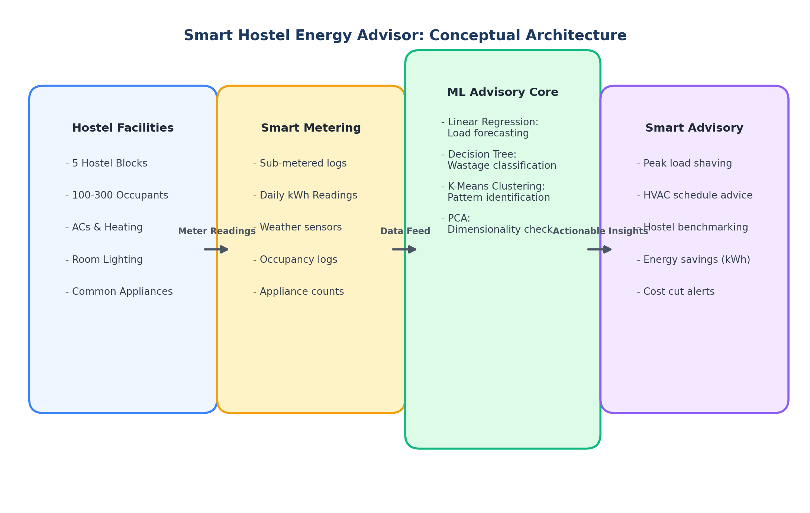
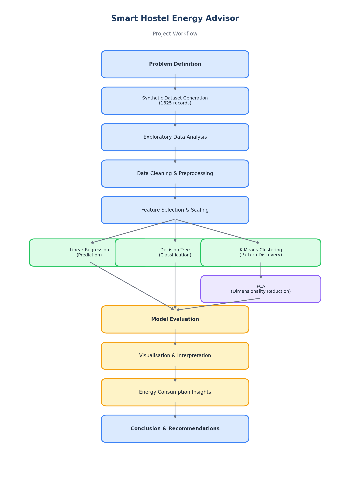
Public energy repositories (such as UCI household datasets) focus on single homes in temperate climates and lack student hostel features (such as student headcounts, study schedules, and shared cooling loads). Therefore, following the assignment specification, a realistic synthetic dataset was generated using Python. It simulates 5 university hostel blocks across an entire calendar year (365 days × 5 hostels = 1,825 daily records) under Ahmedabad weather conditions (PDEU climate).
| Feature Name | Data Type | Mean ± Std | Observed Range | Physical Description & Role |
|---|---|---|---|---|
hostel_id |
Categorical | 5 blocks (H1-H5) | H1 to H5 | Hostel identifier; excluded from numeric feature matrices. |
occupants |
Integer | 157.5 ± 64.7 | 36 – 290 students | Number of residents physically present in the hostel block. |
temperature_c |
Float | 28.1 ± 7.4 °C | 12.0 – 44.1 °C | Mean daily ambient temperature (Ahmedabad seasonal curve). |
ac_usage_hours |
Float | 4.41 ± 3.85 h | 0.0 – 16.9 h | Aggregate air conditioner running hours across hostel wings. |
lighting_hours |
Float | 9.84 ± 1.76 h | 6.0 – 14.0 h | Operating hours for common corridor and bedroom lights. |
appliance_count |
Integer | 171.6 ± 68.1 | 43 – 365 units | Active laptops, fans, charging devices, and water dispensers. |
is_weekend |
Binary | 0.28 (28.5%) | 0 or 1 | Binary indicator (1 = Saturday/Sunday, 0 = Weekday). |
daily_energy_kwh |
Float | 106.78 ± 39.62 | 30.4 – 240.3 kWh | Continuous Target: Total daily electricity consumed. |
Linear Regression models the relationship between a continuous dependent variable $y$ (daily electricity consumption in kWh) and a vector of independent exploratory variables $X = [x_1, x_2, \dots, x_p]^T$ by estimating a linear hyperplane. In our hostel energy context, the mathematical equation is formulated as:
The Ordinary Least Squares (OLS) criterion determines the optimal coefficient vector $\hat{\beta}$ by minimising the Residual Sum of Squares (RSS): $\min_{\beta} \sum_{i=1}^n (y_i - \hat{y}_i)^2$. The analytical closed-form solution is given by $\hat{\beta} = (X^T X)^{-1} X^T y$, assuming $(X^T X)$ is non-singular.
The dataset was partitioned into an 80% training set (1,460 records) and a 20% testing set (365 records) with a fixed random seed (random_state=42) to ensure strict experimental reproducibility. The model was trained using sklearn.linear_model.LinearRegression without target data leakage.
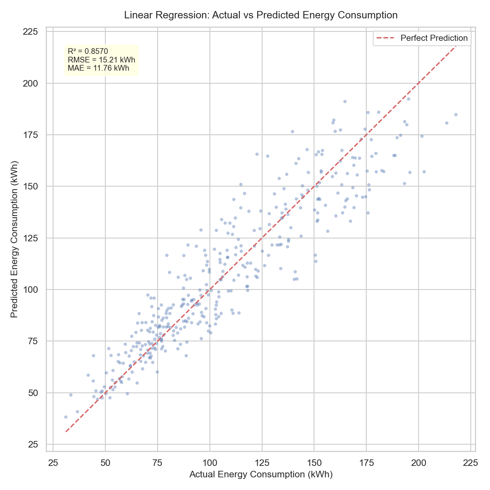
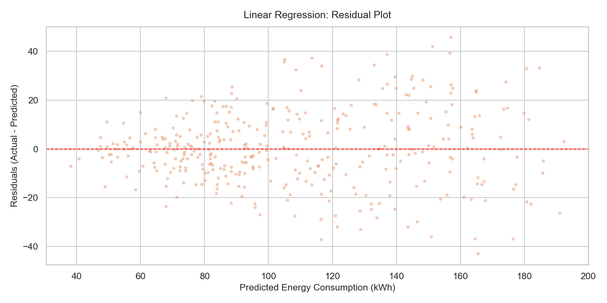
The model was evaluated on the unseen 365-day test set using four standard regression metrics:
| Feature | Learned Weight ($\beta$) | Physical & Engineering Interpretation |
|---|---|---|
ac_usage_hours |
+1.8017 | Strongest positive driver. Every additional hour of AC operation adds approximately 1.80 kWh. |
lighting_hours |
+0.7460 | Longer lighting operation adds 0.75 kWh/hour across common study halls and bedrooms. |
occupants |
+0.4462 | Each additional resident adds approximately 0.45 kWh daily through base electronic presence. |
temperature_c |
+0.4311 | Ambient heat increases cooling loads by 0.43 kWh for every 1 °C elevation. |
appliance_count |
+0.1124 | Minor positive load from individual laptops and chargers. |
is_weekend |
-0.5826 | Slight reduction in overall draw as students leave campus or study outdoors. |
| Intercept ($\beta_0$) | -9.5817 | Baseline mathematical offset of the fitted regression line. |
The high $R^2$ confirms that hostel electricity demand is strongly governed by thermodynamic and occupancy parameters. However, the residual plot (Figure 2.2) shows a slight outward fanning at high energy values. This points to a clear limitation of linear models: air conditioning efficiency degrades non-linearly at extreme temperatures (>38 °C), and compressor cycling introduces quadratic power spikes that simple linear terms cannot fully capture.
A Decision Tree recursively partitions the input space into axis-aligned rectangular regions. At each internal node, the algorithm searches across all available features and all possible split thresholds to find the question that produces the purest child nodes. Purity was measured using the Gini Impurity:
When a split candidate divides node $t$ of size $N$ into left ($N_L$) and right ($N_R$) subsets, the information gain $\Delta I_G$ is calculated as $\Delta I_G = I_G(t) - \left(\frac{N_L}{N} I_G(t_L) + \frac{N_R}{N} I_G(t_R)\right)$. The feature and split point with maximum $\Delta I_G$ are selected.
To classify days into Normal Consumption versus High Consumption, we calculated the 75th percentile energy threshold separately for each hostel block ($Q_3(H_1)=81.6$, $Q_3(H_2)=94.5$, $Q_3(H_3)=116.4$, $Q_3(H_4)=162.7$, $Q_3(H_5)=166.5$ kWh). This per-hostel threshold avoids bias against larger blocks. Crucially, daily_energy_kwh was completely removed from the input features $X$, preventing target leakage.
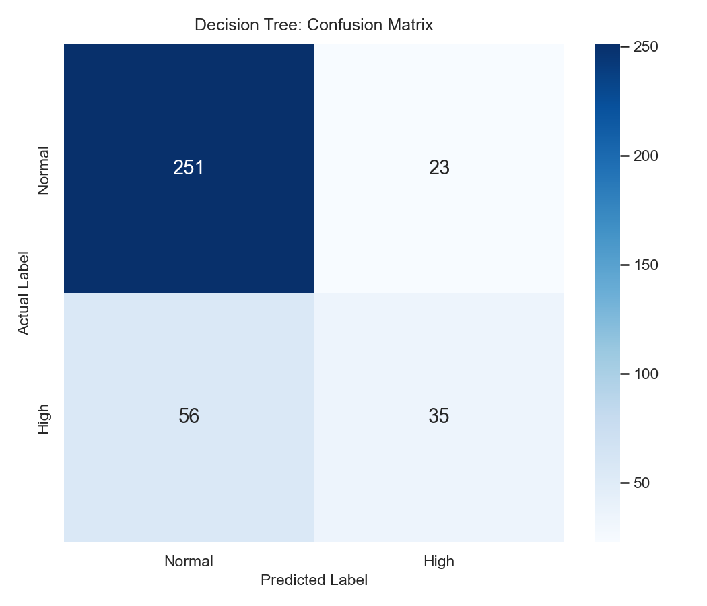
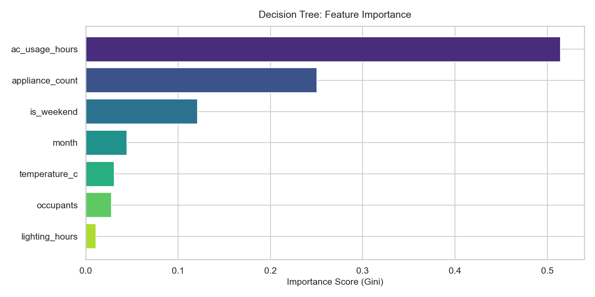
The tree was constrained with max_depth=5, min_samples_split=10, and min_samples_leaf=5 to prevent memorisation of training noise while remaining interpretable. Evaluated on the 365 test samples (stratified split), the performance was:
| Predicted Class ↓ / True Class → | Actual Normal Consumption | Actual High Consumption | Class Total |
|---|---|---|---|
| Predicted Normal | 251 (True Negatives) | 56 (False Negatives) | 307 |
| Predicted High | 23 (False Positives) | 35 (True Positives) | 58 |
| Total Samples | 274 | 91 | 365 (Test Set) |
The feature importance analysis (Figure 3.2) shows that ac_usage_hours accounts for 51.43% of all split decisions, followed by appliance_count (25.02%) and is_weekend (12.11%). The visualised tree shows that the root split occurs on whether AC usage exceeds ~6.2 hours. If AC hours are high and appliance counts exceed 180, the hostel has an 82% probability of crossing into excessive consumption.
Limitations: A single decision tree forms orthogonal boundary steps. Because weather and human behavior change smoothly, the tree can misclassify observations close to its rigid split thresholds.
Unlike the supervised methods in earlier sections, K-Means is an unsupervised clustering algorithm. It groups unlabeled hostel observation vectors into $k$ distinct partitions without predefined target classes. Given a dataset of $n$ observations $\{x_1, x_2, \dots, x_n\} \in \mathbb{R}^d$, K-Means partitions the data into $k$ non-overlapping sets $S = \{S_1, S_2, \dots, S_k\}$ by minimising the within-cluster sum of squares (WCSS), also known as Inertia:
where $\mu_j = \frac{1}{|S_j|} \sum_{x \in S_j} x$ represents the geometric centroid of cluster $S_j$, and $\|\cdot\|_2$ denotes standard Euclidean distance. The algorithm alternates between two steps until centroids stabilize:
Because Euclidean distance is sensitive to feature magnitudes, unscaled variables with large numerical values (such as occupants ranging up to 290 or appliance_count up to 365) would dominate smaller variables (such as ac_usage_hours from 0 to 16.9 or is_weekend from 0 to 1). We applied Z-score standardisation via StandardScaler:
To choose a well-founded number of clusters, we ran experiments from $k = 2$ through $k = 10$ using n_init=10 restarts. We tracked both Inertia and the Silhouette Coefficient $s(i) = \frac{b(i) - a(i)}{\max(a(i), b(i))}$, where $a(i)$ is the mean intra-cluster distance and $b(i)$ is the nearest-cluster distance.
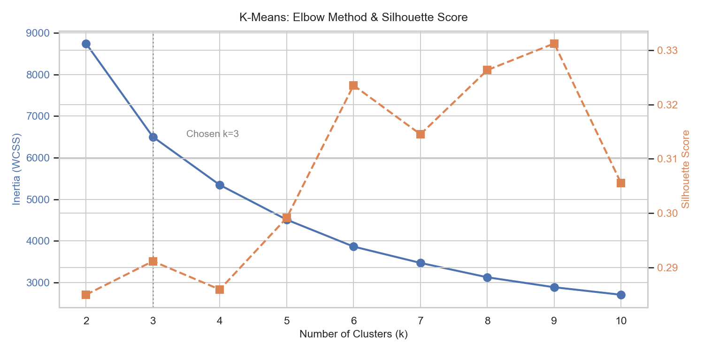
| Clusters ($k$) | Inertia (WCSS) | Silhouette Score | Rate of Inertia Reduction ($\Delta \text{Inertia}$) |
|---|---|---|---|
| $k = 2$ | 8,748.05 | 0.2849 | Baseline |
| $k = 3$ (Selected) | 6,501.36 | 0.2911 | −2,246.69 (Sharpest bend: 25.7% drop) |
| $k = 4$ | 5,343.45 | 0.2859 | −1,157.91 (Diminishing return) |
| $k = 5$ | 4,508.54 | 0.2991 | −834.91 |
| $k = 6$ | 3,861.24 | 0.3235 | −647.30 (Over-segmentation of hostel types) |
Selection Justification: While higher $k$ values show mathematical increases in silhouette score, the rate of inertia reduction drops significantly after $k=3$ (Figure 4.1). Choosing $k=3$ matches our university domain requirement: categorising hostel operational days into Low, Moderate, and High consumption states that campus administrators can easily act on.
Rather than assuming cluster indices automatically represent low, medium, or high consumption, we analyzed the mean feature values of each cluster after training before assigning descriptive labels:
| Assigned Profile | Cluster ID | Sample Count | Mean Occupants | Mean Temp | Mean AC Hours | Mean Lighting | Mean Energy (kWh) |
|---|---|---|---|---|---|---|---|
| Low Consumption | Cluster 2 | 699 (38.3%) | 109.9 students | 34.79 °C | 6.90 h | 8.48 h | 85.20 kWh |
| Moderate Consumption | Cluster 0 | 608 (33.3%) | 142.1 students | 21.27 °C | 1.24 h | 11.07 h | 89.22 kWh |
| High Consumption | Cluster 1 | 518 (28.4%) | 239.9 students | 26.91 °C | 4.77 h | 10.22 h | 156.52 kWh |
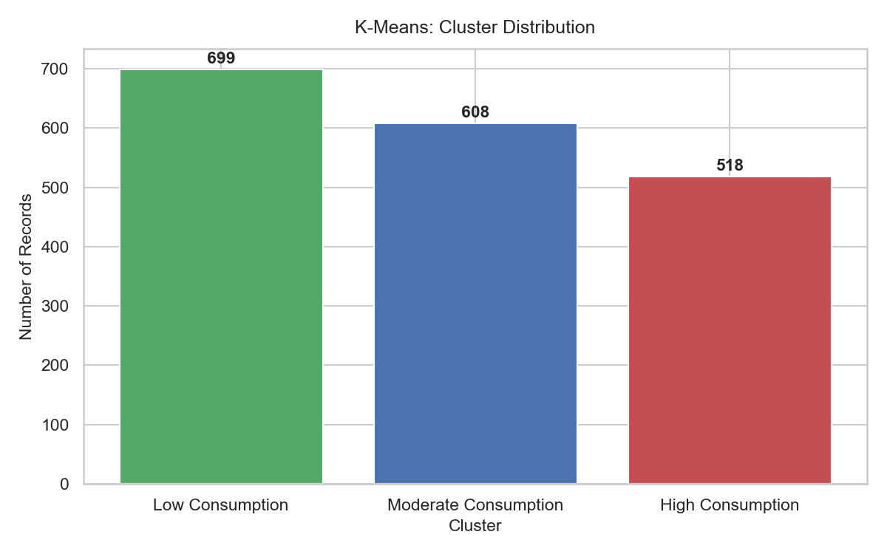
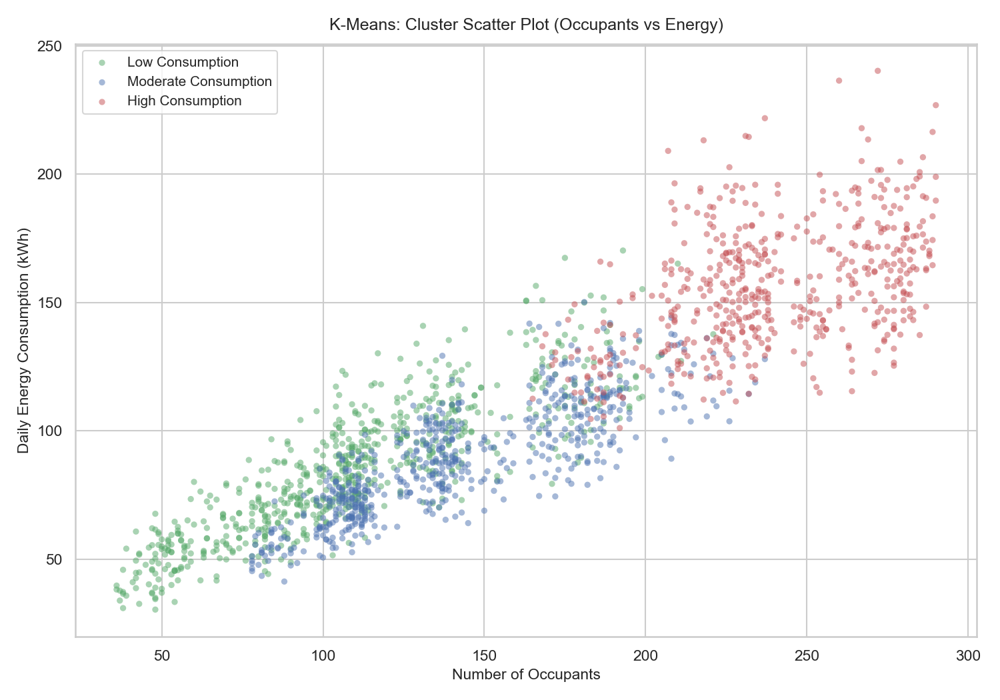
Examining the cluster centroids reveals interesting behavioral patterns across campus:
K-Means assumes spherical clusters of approximately equal variance. Because energy data forms a continuous distribution rather than isolated groups, points along the boundaries between moderate and low clusters can be assigned somewhat arbitrarily. Additionally, the final clustering remains sensitive to initial centroid placement, though running with n_init=10 mitigates this.
Principal Component Analysis (PCA) is an orthogonal linear transformation technique that maps data from an original $d$-dimensional space into an uncorrelated $k$-dimensional subspace ($k \le d$) while retaining as much variance as possible. Given a standardized data matrix $X \in \mathbb{R}^{n \times d}$ with zero empirical mean, the sample covariance matrix $\Sigma$ is computed as:
Because $\Sigma$ is symmetric and positive semi-definite, the spectral theorem guarantees its eigendecomposition:
where $\lambda_1 \ge \lambda_2 \ge \dots \ge \lambda_d \ge 0$ are the eigenvalues, representing the variance captured along each principal axis, and $v_i$ are the corresponding orthonormal eigenvectors (the principal component loading vectors). The proportion of total variance explained by the $j$-th principal component is given by $\frac{\lambda_j}{\sum_{m=1}^d \lambda_m}$.
To ensure an accurate structural transformation without circular reasoning, no identifier columns (hostel_id, date) and no target labels (daily_energy_kwh, consumption_category) were included. The input matrix consisted solely of the 7 operational and climatic features: occupants, temperature_c, ac_usage_hours, lighting_hours, appliance_count, is_weekend, and month.
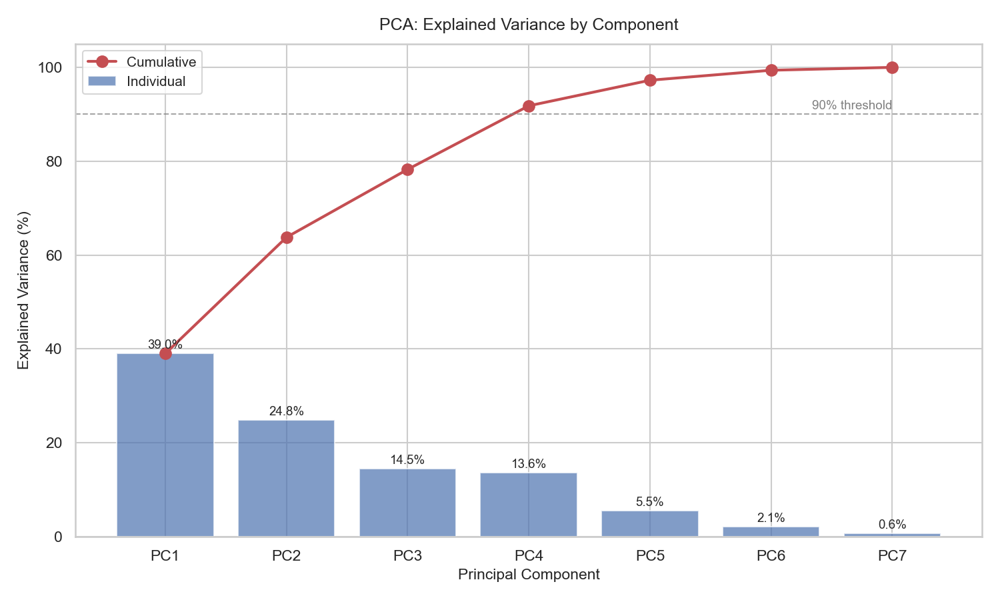
Table 5.1 lists the variance explained by each principal component from our experimental run:
| Component | Eigenvalue ($\lambda$) | Individual Variance Explained | Cumulative Variance Explained | Dimensionality Threshold Benchmark |
|---|---|---|---|---|
| PC1 | 2.729 | 38.98% | 38.98% | Primary Weather / Seasonal axis |
| PC2 | 1.735 | 24.79% | 63.77% | 2D Projection Retained Information (63.8%) |
| PC3 | 1.014 | 14.48% | 78.25% | Lighting and study cycle axis |
| PC4 | 0.949 | 13.55% | 91.80% | $\ge 90\%$ Information Retention Cutoff (4 PCs) |
| PC5 | 0.382 | 5.45% | 97.25% | $\ge 95\%$ Information Retention Cutoff (5 PCs) |
| PC6 | 0.149 | 2.13% | 99.38% | Residual weekly variance |
| PC7 | 0.043 | 0.62% | 100.00% | Noise component |
Information Retention Summary: Reducing the 7 input features to a 2-dimensional plane ($PC_1, PC_2$) preserves 63.77% of the total dataset variance, while 36.23% is lost. To preserve $\ge 90\%$ of the original information for downstream models, 4 components are needed ($91.80\%$).
To understand what the principal components physically represent, we examined the component loading matrix $V_{d \times 2}$, which contains the cosine weights connecting the original features to $PC_1$ and $PC_2$:
| Input Feature | $PC_1$ Loading (38.98% Var) | $PC_2$ Loading (24.79% Var) | Physical Dimension Mapping |
|---|---|---|---|
temperature_c |
+0.5072 | +0.3342 | Heavy positive loading on $PC_1$ (Summer / Heat axis). |
lighting_hours |
-0.4680 | -0.2095 | Opposes temperature on $PC_1$ (Winter / Long nights). |
occupants |
-0.4197 | +0.5039 | Dominates $PC_2$ (Headcount / Physical campus load). |
appliance_count |
-0.4096 | +0.5144 | Dominates $PC_2$ (Personal electronics load). |
ac_usage_hours |
+0.3771 | +0.5046 | Loads positively on both (driven by heat AND occupancy). |
is_weekend |
+0.1537 | -0.2637 | Negative loading on $PC_2$ (reduced weekend occupancy). |
month |
-0.1182 | -0.0415 | Minor seasonal drift. |
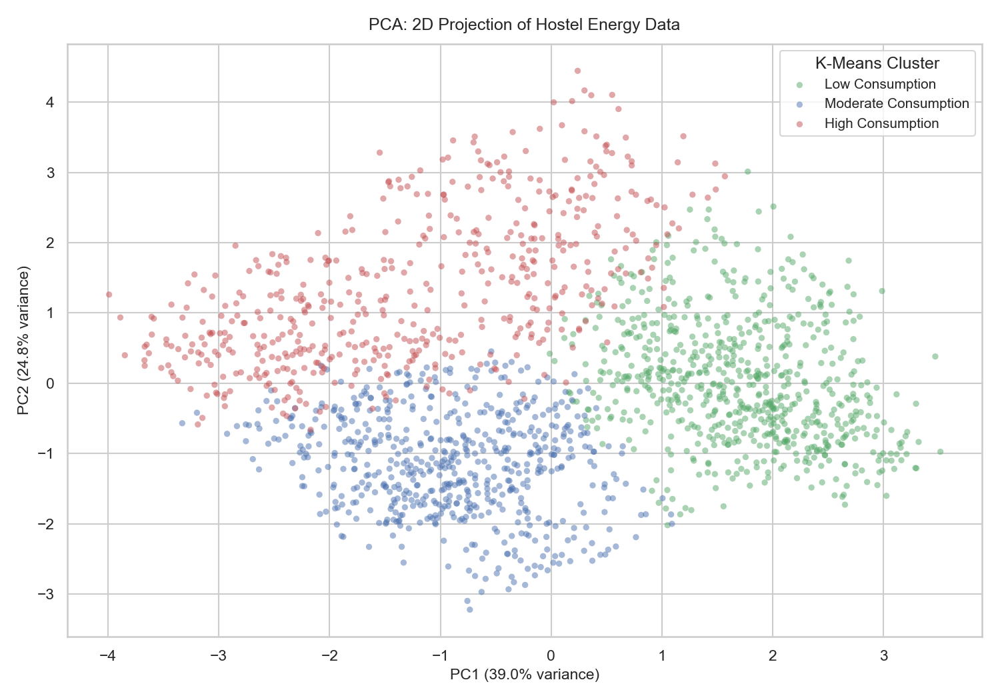
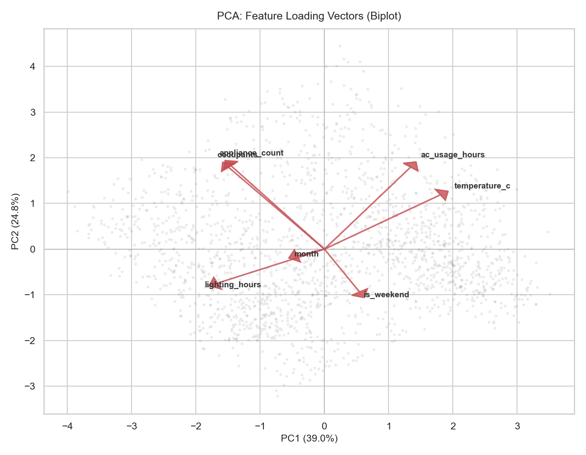
The loadings and biplot (Figure 5.3) show that the 7 original hostel variables condense into two primary physical mechanisms:
temperature_c (+0.5072) and lighting_hours (-0.4680). A high $PC_1$ score indicates hot summer days with long cooling requirements and late sunsets. A negative $PC_1$ score reflects cold winter conditions with short daylight hours and heavy lighting use.
appliance_count (+0.5144), ac_usage_hours (+0.5046), and occupants (+0.5039). A high $PC_2$ score indicates high physical population density and heavy device usage, regardless of the season.
When we plot the K-Means clusters onto this 2D plane (Figure 5.2), the three groups separate clearly without using the target label: High Consumption points sit in the upper half (high $PC_2$), Low Consumption points sit on the far right (high $PC_1$, low $PC_2$), and Moderate points occupy the bottom left.
PCA only captures linear correlations. Non-linear relationships (such as the sudden spike in AC use above 28 °C) get flattened, which explains why 2 components capture 63.8% rather than 80%+ of the total variance.
All four prescribed machine learning techniques were implemented and evaluated on the hostel energy dataset. Table 6.1 compares their respective roles and performance:
| Algorithm | Learning Paradigm | Key Objective | Primary Metric | Key Insight Discovered |
|---|---|---|---|---|
| Linear Regression | Supervised Regression | Forecast daily energy (kWh) | $R^2 = \mathbf{0.8570}$, $\text{RMSE} = 15.21 \text{ kWh}$ | AC hours is the primary linear driver ($\beta = +1.802$ kWh/h). |
| Decision Tree | Supervised Classification | Detect high-risk wastage days | $\text{Accuracy} = \mathbf{78.36\%}$, $\text{F1} = 0.4698$ | AC hours drives 51.4% of high-consumption classification splits. |
| K-Means Clustering | Unsupervised Clustering | Discover consumption patterns | $\text{Silhouette} = \mathbf{0.2911}$ at $k=3$ | Hostels operate in 3 distinct modes (Vacation, Winter, Full-Load). |
| PCA | Unsupervised Transform | Dimensionality reduction | 63.77% var (2 PCs), 91.80% (4 PCs) | Operational variance condenses into Climate and Occupancy axes. |
Based on the patterns identified by our models, we suggest four concrete steps for PDEU hostel administration:
Current Limitations: First, the dataset is synthetic, designed around documented university assumptions rather than physical sub-meter hardware. Second, daily aggregate readings smooth out short-term usage spikes; having hourly or 15-minute intervals would allow better peak-demand modeling.
Future Scope: Future work could integrate IoT smart plugs for real-time sub-metering, test non-linear ensemble models (such as Random Forest or XGBoost) to better capture compressor physics, and implement automated temperature setpoint controls via campus IoT gateways.
In accordance with the assignment guidelines, the absence of public datasets with room-level hostel variables (such as student headcounts, AC runtime, and appliance inventories) was addressed by generating a realistic synthetic dataset via src/data_generation.py. Key generation parameters are summarized below:
| Software / Library | Version | Primary Function in Implementation |
|---|---|---|
| Python | 3.13.3 | Core programming language and execution environment. |
| pandas | 3.0.1 | DataFrame manipulation, date parsing, group-by statistics. |
| NumPy | 2.4.2 | Vectorized array operations and sinusoidal math modeling. |
| scikit-learn | 1.8.0 | OLS regression, DecisionTreeClassifier, KMeans, PCA, metrics. |
| Matplotlib | 3.10.8 | Generation of publication-grade figures, trees, and biplots. |
| Seaborn | 0.13.2 | Heatmaps, distribution styling, and multi-hue scatter plots. |
The complete source code, dataset generation scripts, full CSV datasets, trained models, and original visualisations are open-source and hosted on GitHub at:
👉 https://github.com/ayushaher0101/Smart-Hostel-Energy-Advisor